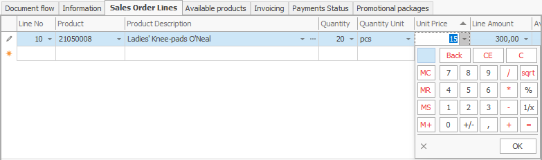
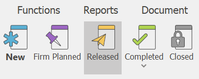

Sales order
A sales order document is intended for the selling of goods to customers.
To create it, go to Customers >> Sales >> Create new sales order
Let's fill in the following fields:
- Customer - from the dropdown, choose the customer you're going to sell to.

- Store - you can fill in the field in the header of the document, or you can fill it in the sales rows, for each row separately.

Product code - from the dropdown, select the product for sale.
Product name - if you choose the code, this name is generated automatically.

- Quantity - this is the sold quantity.

- Measurement unit name - here, indicate the unit of measure of the sold quantity.
- Unit price - this is the price unit of the sold quantity.

- Amount to pay - by default, this is a product of the unit price and the quantity.
Other values lead to a recalculation of the unit price.

After filling in the data, release the document.

In the standard operating model, the system is set to continue with an invoice order.
To view all issued Sales, go to Customers >> Sales >> Orders navigator.
Press the Display button.
A list of all issued sales will appear.

If you double-click the selected sale, you can open and view it.